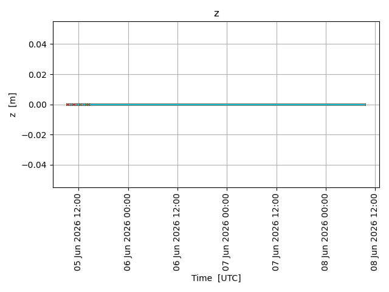
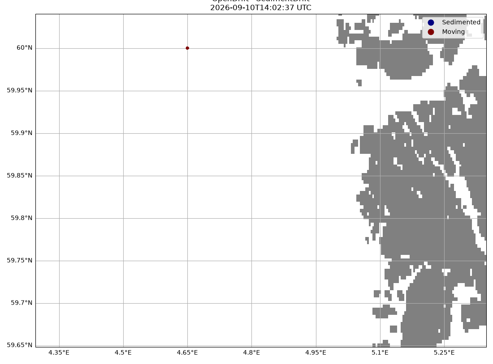

Note
Go to the end to download the full example code.
Sediment drift with resuspension
from datetime import timedelta, datetime
from opendrift.readers import reader_oscillating
from opendrift.models.sedimentdrift import SedimentDrift
Constructing an artificial current field where x- and y-components are oscilating with different amplitude and period
reader_oscx = reader_oscillating.Reader('x_sea_water_velocity',
amplitude=0.6, zero_time=datetime.now())
reader_oscy = reader_oscillating.Reader('y_sea_water_velocity',
amplitude=.3, period=timedelta(hours=5), zero_time=datetime.now())
o = SedimentDrift(loglevel=50) # 0 for debug output
if True:
o.add_reader([reader_oscx, reader_oscy])
o.set_config('environment:fallback:y_wind', -6)
o.set_config('environment:fallback:x_wind', -3)
o.set_config('environment:fallback:sea_floor_depth_below_sea_level', 30) # 100m depth
else: # Using live data from Thredds instead of oscillating currents
o.add_readers_from_list([
'https://thredds.met.no/thredds/dodsC/fou-hi/norkystv3_800m_m00_be'])
Set threshold for bottom resuspension
o.set_config('vertical_mixing:resuspension_threshold', .5)
# Adding some horizontal and vertical diffusion
o.set_config('drift:current_uncertainty', 0.1)
o.set_config('drift:wind_uncertainty', 1)
o.set_config('vertical_mixing:diffusivitymodel', 'windspeed_Large1994')
#o.set_config('vertical_mixing:diffusivitymodel', 'environment')
Seeding sediments
o.seed_elements(lon=4.65, lat=60, number=10000,
time=[datetime.now(), datetime.now()+timedelta(hours=6)],
terminal_velocity=-.01) # 1 cm/s settling speed
o.run(time_step=1800, time_step_output=1800, duration=timedelta(hours=72))
<xarray.Dataset> Size: 145MB
Dimensions: (
trajectory: 10000,
time: 145)
Coordinates:
* trajectory (trajectory) int64 80kB ...
* time (time) datetime64[ns] 1kB ...
Data variables: (12/25)
status (trajectory, time) float32 6MB ...
moving (trajectory, time) float32 6MB ...
age_seconds (trajectory, time) float32 6MB ...
origin_marker (trajectory, time) float32 6MB ...
lon (trajectory, time) float32 6MB ...
lat (trajectory, time) float32 6MB ...
... ...
sea_surface_wave_period_at_variance_spectral_density_maximum (trajectory, time) float32 6MB ...
sea_surface_wave_mean_period_from_variance_spectral_density_second_frequency_moment (trajectory, time) float32 6MB ...
land_binary_mask (trajectory, time) float32 6MB ...
ocean_vertical_diffusivity (trajectory, time) float32 6MB ...
ocean_mixed_layer_thickness (trajectory, time) float32 6MB ...
sea_floor_depth_below_sea_level (trajectory, time) float32 6MB ...
Attributes: (12/125)
Conventions: ...
standard_name_vocabulary: ...
featureType: ...
title: ...
summary: ...
keywords: ...
... ...
geospatial_lon_units: ...
geospatial_lon_resolution: ...
runtime: ...
geospatial_vertical_min: ...
geospatial_vertical_max: ...
geospatial_vertical_positive: ...xarray.Dataset
- trajectory: 10000
- time: 145
- trajectory(trajectory)int640 1 2 3 4 ... 9996 9997 9998 9999
- cf_role :
- trajectory_id
- dtype :
- <class 'numpy.int32'>
array([ 0, 1, 2, ..., 9997, 9998, 9999], shape=(10000,))
- time(time)datetime64[ns]2026-06-05T09:22:11.079278 ... 2...
- standard_name :
- time
- long_name :
- time
- dtype :
- <class 'numpy.float64'>
array(['2026-06-05T09:22:11.079278000', '2026-06-05T09:52:11.079278000', '2026-06-05T10:22:11.079278000', '2026-06-05T10:52:11.079278000', '2026-06-05T11:22:11.079278000', '2026-06-05T11:52:11.079278000', '2026-06-05T12:22:11.079278000', '2026-06-05T12:52:11.079278000', '2026-06-05T13:22:11.079278000', '2026-06-05T13:52:11.079278000', '2026-06-05T14:22:11.079278000', '2026-06-05T14:52:11.079278000', '2026-06-05T15:22:11.079278000', '2026-06-05T15:52:11.079278000', '2026-06-05T16:22:11.079278000', '2026-06-05T16:52:11.079278000', '2026-06-05T17:22:11.079278000', '2026-06-05T17:52:11.079278000', '2026-06-05T18:22:11.079278000', '2026-06-05T18:52:11.079278000', '2026-06-05T19:22:11.079278000', '2026-06-05T19:52:11.079278000', '2026-06-05T20:22:11.079278000', '2026-06-05T20:52:11.079278000', '2026-06-05T21:22:11.079278000', '2026-06-05T21:52:11.079278000', '2026-06-05T22:22:11.079278000', '2026-06-05T22:52:11.079278000', '2026-06-05T23:22:11.079278000', '2026-06-05T23:52:11.079278000', '2026-06-06T00:22:11.079278000', '2026-06-06T00:52:11.079278000', '2026-06-06T01:22:11.079278000', '2026-06-06T01:52:11.079278000', '2026-06-06T02:22:11.079278000', '2026-06-06T02:52:11.079278000', '2026-06-06T03:22:11.079278000', '2026-06-06T03:52:11.079278000', '2026-06-06T04:22:11.079278000', '2026-06-06T04:52:11.079278000', '2026-06-06T05:22:11.079278000', '2026-06-06T05:52:11.079278000', '2026-06-06T06:22:11.079278000', '2026-06-06T06:52:11.079278000', '2026-06-06T07:22:11.079278000', '2026-06-06T07:52:11.079278000', '2026-06-06T08:22:11.079278000', '2026-06-06T08:52:11.079278000', '2026-06-06T09:22:11.079278000', '2026-06-06T09:52:11.079278000', '2026-06-06T10:22:11.079278000', '2026-06-06T10:52:11.079278000', '2026-06-06T11:22:11.079278000', '2026-06-06T11:52:11.079278000', '2026-06-06T12:22:11.079278000', '2026-06-06T12:52:11.079278000', '2026-06-06T13:22:11.079278000', '2026-06-06T13:52:11.079278000', '2026-06-06T14:22:11.079278000', '2026-06-06T14:52:11.079278000', '2026-06-06T15:22:11.079278000', '2026-06-06T15:52:11.079278000', '2026-06-06T16:22:11.079278000', '2026-06-06T16:52:11.079278000', '2026-06-06T17:22:11.079278000', '2026-06-06T17:52:11.079278000', '2026-06-06T18:22:11.079278000', '2026-06-06T18:52:11.079278000', '2026-06-06T19:22:11.079278000', '2026-06-06T19:52:11.079278000', '2026-06-06T20:22:11.079278000', '2026-06-06T20:52:11.079278000', '2026-06-06T21:22:11.079278000', '2026-06-06T21:52:11.079278000', '2026-06-06T22:22:11.079278000', '2026-06-06T22:52:11.079278000', '2026-06-06T23:22:11.079278000', '2026-06-06T23:52:11.079278000', '2026-06-07T00:22:11.079278000', '2026-06-07T00:52:11.079278000', '2026-06-07T01:22:11.079278000', '2026-06-07T01:52:11.079278000', '2026-06-07T02:22:11.079278000', '2026-06-07T02:52:11.079278000', '2026-06-07T03:22:11.079278000', '2026-06-07T03:52:11.079278000', '2026-06-07T04:22:11.079278000', '2026-06-07T04:52:11.079278000', '2026-06-07T05:22:11.079278000', '2026-06-07T05:52:11.079278000', '2026-06-07T06:22:11.079278000', '2026-06-07T06:52:11.079278000', '2026-06-07T07:22:11.079278000', '2026-06-07T07:52:11.079278000', '2026-06-07T08:22:11.079278000', '2026-06-07T08:52:11.079278000', '2026-06-07T09:22:11.079278000', '2026-06-07T09:52:11.079278000', '2026-06-07T10:22:11.079278000', '2026-06-07T10:52:11.079278000', '2026-06-07T11:22:11.079278000', '2026-06-07T11:52:11.079278000', '2026-06-07T12:22:11.079278000', '2026-06-07T12:52:11.079278000', '2026-06-07T13:22:11.079278000', '2026-06-07T13:52:11.079278000', '2026-06-07T14:22:11.079278000', '2026-06-07T14:52:11.079278000', '2026-06-07T15:22:11.079278000', '2026-06-07T15:52:11.079278000', '2026-06-07T16:22:11.079278000', '2026-06-07T16:52:11.079278000', '2026-06-07T17:22:11.079278000', '2026-06-07T17:52:11.079278000', '2026-06-07T18:22:11.079278000', '2026-06-07T18:52:11.079278000', '2026-06-07T19:22:11.079278000', '2026-06-07T19:52:11.079278000', '2026-06-07T20:22:11.079278000', '2026-06-07T20:52:11.079278000', '2026-06-07T21:22:11.079278000', '2026-06-07T21:52:11.079278000', '2026-06-07T22:22:11.079278000', '2026-06-07T22:52:11.079278000', '2026-06-07T23:22:11.079278000', '2026-06-07T23:52:11.079278000', '2026-06-08T00:22:11.079278000', '2026-06-08T00:52:11.079278000', '2026-06-08T01:22:11.079278000', '2026-06-08T01:52:11.079278000', '2026-06-08T02:22:11.079278000', '2026-06-08T02:52:11.079278000', '2026-06-08T03:22:11.079278000', '2026-06-08T03:52:11.079278000', '2026-06-08T04:22:11.079278000', '2026-06-08T04:52:11.079278000', '2026-06-08T05:22:11.079278000', '2026-06-08T05:52:11.079278000', '2026-06-08T06:22:11.079278000', '2026-06-08T06:52:11.079278000', '2026-06-08T07:22:11.079278000', '2026-06-08T07:52:11.079278000', '2026-06-08T08:22:11.079278000', '2026-06-08T08:52:11.079278000', '2026-06-08T09:22:11.079278000'], dtype='datetime64[ns]')
- status(trajectory, time)float320.0 0.0 0.0 0.0 ... 0.0 0.0 0.0 0.0
- dtype :
- <class 'numpy.int32'>
- valid_range :
- [0 0]
- flag_values :
- [0]
- flag_meanings :
- active
array([[ 0., 0., 0., ..., 0., 0., 0.], [ 0., 0., 0., ..., 0., 0., 0.], [ 0., 0., 0., ..., 0., 0., 0.], ..., [nan, nan, nan, ..., 0., 0., 0.], [nan, nan, nan, ..., 0., 0., 0.], [nan, nan, nan, ..., 0., 0., 0.]], shape=(10000, 145), dtype=float32) - moving(trajectory, time)float321.0 1.0 1.0 1.0 ... 1.0 1.0 1.0 1.0
- dtype :
- <class 'numpy.int32'>
- minval :
- 1
- maxval :
- 1
array([[ 1., 1., 1., ..., 1., 1., 1.], [ 1., 1., 1., ..., 1., 1., 1.], [ 1., 1., 1., ..., 1., 1., 1.], ..., [nan, nan, nan, ..., 1., 1., 1.], [nan, nan, nan, ..., 1., 1., 1.], [nan, nan, nan, ..., 1., 1., 1.]], shape=(10000, 145), dtype=float32) - age_seconds(trajectory, time)float320.0 1.8e+03 ... 2.376e+05 2.394e+05
- dtype :
- <class 'numpy.float32'>
- units :
- s
- minval :
- 0.0
- maxval :
- 259200.0
array([[ 0., 1800., 3600., ..., 255600., 257400., 259200.], [ 0., 1800., 3600., ..., 255600., 257400., 259200.], [ 0., 1800., 3600., ..., 255600., 257400., 259200.], ..., [ nan, nan, nan, ..., 235800., 237600., 239400.], [ nan, nan, nan, ..., 235800., 237600., 239400.], [ nan, nan, nan, ..., 235800., 237600., 239400.]], shape=(10000, 145), dtype=float32) - origin_marker(trajectory, time)float320.0 0.0 0.0 0.0 ... 0.0 0.0 0.0 0.0
- dtype :
- <class 'numpy.int32'>
- unit :
- description :
- An integer kept constant during the simulation. Different values may be used for different seedings, to separate elements during analysis. With GUI, only a single seeding is possible.
- flag_values :
- [0]
- flag_meanings :
- Seed_0
- minval :
- 0
- maxval :
- 0
array([[ 0., 0., 0., ..., 0., 0., 0.], [ 0., 0., 0., ..., 0., 0., 0.], [ 0., 0., 0., ..., 0., 0., 0.], ..., [nan, nan, nan, ..., 0., 0., 0.], [nan, nan, nan, ..., 0., 0., 0.], [nan, nan, nan, ..., 0., 0., 0.]], shape=(10000, 145), dtype=float32) - lon(trajectory, time)float324.65 4.654 4.652 ... 5.058 5.053
- dtype :
- <class 'numpy.float32'>
- units :
- degrees_east
- standard_name :
- longitude
- long_name :
- longitude
- axis :
- X
- minval :
- 4.314947
- maxval :
- 5.3282285
array([[4.65 , 4.6537676, 4.651987 , ..., 4.9494634, 4.9562354, 4.9572144], [4.65 , 4.6493025, 4.650155 , ..., 4.957129 , 4.9618106, 4.9596233], [4.65 , 4.6506047, 4.646971 , ..., 5.0193815, 5.0210066, 5.0209007], ..., [ nan, nan, nan, ..., 4.895766 , 4.893511 , 4.89518 ], [ nan, nan, nan, ..., 4.9127197, 4.916221 , 4.9185295], [ nan, nan, nan, ..., 5.057794 , 5.058161 , 5.0531893]], shape=(10000, 145), dtype=float32) - lat(trajectory, time)float3260.0 60.0 60.0 ... 59.74 59.75
- dtype :
- <class 'numpy.float32'>
- units :
- degrees_north
- standard_name :
- latitude
- long_name :
- latitude
- axis :
- Y
- minval :
- 59.65844
- maxval :
- 60.03005
array([[60. , 59.99876 , 59.997643, ..., 59.73759 , 59.738747, 59.74631 ], [60. , 59.99921 , 59.996067, ..., 59.738655, 59.740513, 59.74219 ], [60. , 59.99663 , 59.995205, ..., 59.72847 , 59.73013 , 59.733044], ..., [ nan, nan, nan, ..., 59.692207, 59.693336, 59.697193], [ nan, nan, nan, ..., 59.724514, 59.726467, 59.72711 ], [ nan, nan, nan, ..., 59.740143, 59.74154 , 59.74549 ]], shape=(10000, 145), dtype=float32) - z(trajectory, time)float320.0 0.0 0.0 0.0 ... 0.0 0.0 0.0 0.0
- dtype :
- <class 'numpy.float32'>
- units :
- m
- standard_name :
- z
- long_name :
- vertical position
- axis :
- Z
- positive :
- up
- minval :
- 0.0
- maxval :
- 0.0
array([[ 0., 0., 0., ..., 0., 0., 0.], [ 0., 0., 0., ..., 0., 0., 0.], [ 0., 0., 0., ..., 0., 0., 0.], ..., [nan, nan, nan, ..., 0., 0., 0.], [nan, nan, nan, ..., 0., 0., 0.], [nan, nan, nan, ..., 0., 0., 0.]], shape=(10000, 145), dtype=float32) - wind_drift_factor(trajectory, time)float320.02 0.02 0.02 ... 0.02 0.02 0.02
- dtype :
- <class 'numpy.float32'>
- units :
- 1
- description :
- Elements at surface are moved with this fraction of the vind vector, in addition to currents and Stokes drift
- minval :
- 0.02
- maxval :
- 0.02
array([[0.02, 0.02, 0.02, ..., 0.02, 0.02, 0.02], [0.02, 0.02, 0.02, ..., 0.02, 0.02, 0.02], [0.02, 0.02, 0.02, ..., 0.02, 0.02, 0.02], ..., [ nan, nan, nan, ..., 0.02, 0.02, 0.02], [ nan, nan, nan, ..., 0.02, 0.02, 0.02], [ nan, nan, nan, ..., 0.02, 0.02, 0.02]], shape=(10000, 145), dtype=float32) - current_drift_factor(trajectory, time)float321.0 1.0 1.0 1.0 ... 1.0 1.0 1.0 1.0
- dtype :
- <class 'numpy.float32'>
- units :
- 1
- description :
- Elements are moved with this fraction of the current vector, in addition to currents and Stokes drift
- minval :
- 1.0
- maxval :
- 1.0
array([[ 1., 1., 1., ..., 1., 1., 1.], [ 1., 1., 1., ..., 1., 1., 1.], [ 1., 1., 1., ..., 1., 1., 1.], ..., [nan, nan, nan, ..., 1., 1., 1.], [nan, nan, nan, ..., 1., 1., 1.], [nan, nan, nan, ..., 1., 1., 1.]], shape=(10000, 145), dtype=float32) - terminal_velocity(trajectory, time)float32-0.01 -0.01 -0.01 ... -0.01 -0.01
- dtype :
- <class 'numpy.float32'>
- units :
- m/s
- minval :
- -0.01
- maxval :
- -0.01
array([[-0.01, -0.01, -0.01, ..., -0.01, -0.01, -0.01], [-0.01, -0.01, -0.01, ..., -0.01, -0.01, -0.01], [-0.01, -0.01, -0.01, ..., -0.01, -0.01, -0.01], ..., [ nan, nan, nan, ..., -0.01, -0.01, -0.01], [ nan, nan, nan, ..., -0.01, -0.01, -0.01], [ nan, nan, nan, ..., -0.01, -0.01, -0.01]], shape=(10000, 145), dtype=float32) - settled(trajectory, time)float320.0 0.0 0.0 0.0 ... 0.0 0.0 0.0 0.0
- dtype :
- <class 'numpy.uint8'>
- units :
- 1
- minval :
- 0
- maxval :
- 0
array([[ 0., 0., 0., ..., 0., 0., 0.], [ 0., 0., 0., ..., 0., 0., 0.], [ 0., 0., 0., ..., 0., 0., 0.], ..., [nan, nan, nan, ..., 0., 0., 0.], [nan, nan, nan, ..., 0., 0., 0.], [nan, nan, nan, ..., 0., 0., 0.]], shape=(10000, 145), dtype=float32) - x_sea_water_velocity(trajectory, time)float320.1764 0.02968 ... -0.08855
- minval :
- -1.018119
- maxval :
- 1.0368029
array([[ 0.17640842, 0.02967811, 0.10040792, ..., 0.31032336, 0.09747153, 0.09747153], [ 0.04001891, 0.08297058, 0.11503962, ..., 0.21695784, -0.02193296, -0.02193296], [ 0.09787699, -0.06513508, 0.00946761, ..., 0.10161683, 0.0858451 , 0.0858451 ], ..., [ nan, nan, nan, ..., -0.01610417, 0.07293904, 0.07293904], [ nan, nan, nan, ..., 0.14972547, 0.13996601, 0.13996601], [ nan, nan, nan, ..., 0.05969872, -0.08855285, -0.08855285]], shape=(10000, 145), dtype=float32) - y_sea_water_velocity(trajectory, time)float320.005165 0.04866 ... 0.3579 0.3579
- minval :
- -0.749789
- maxval :
- 0.71832526
array([[ 0.00516513, 0.04865828, 0.15176499, ..., 0.21627848, 0.580717 , 0.580717 ], [ 0.08673529, -0.07285058, 0.23436603, ..., 0.24177355, 0.26389372, 0.26389372], [-0.08482442, 0.01732367, 0.15258355, ..., 0.19645964, 0.32842708, 0.32842708], ..., [ nan, nan, nan, ..., 0.18402727, 0.37293792, 0.37293792], [ nan, nan, nan, ..., 0.23299707, 0.15924677, 0.15924677], [ nan, nan, nan, ..., 0.21412505, 0.35787466, 0.35787466]], shape=(10000, 145), dtype=float32) - sea_surface_height(trajectory, time)float320.0 0.0 0.0 0.0 ... 0.0 0.0 0.0 0.0
- minval :
- 0.0
- maxval :
- 0.0
array([[ 0., 0., 0., ..., 0., 0., 0.], [ 0., 0., 0., ..., 0., 0., 0.], [ 0., 0., 0., ..., 0., 0., 0.], ..., [nan, nan, nan, ..., 0., 0., 0.], [nan, nan, nan, ..., 0., 0., 0.], [nan, nan, nan, ..., 0., 0., 0.]], shape=(10000, 145), dtype=float32) - upward_sea_water_velocity(trajectory, time)float320.0 0.0 0.0 0.0 ... 0.0 0.0 0.0 0.0
- minval :
- 0.0
- maxval :
- 0.0
array([[ 0., 0., 0., ..., 0., 0., 0.], [ 0., 0., 0., ..., 0., 0., 0.], [ 0., 0., 0., ..., 0., 0., 0.], ..., [nan, nan, nan, ..., 0., 0., 0.], [nan, nan, nan, ..., 0., 0., 0.], [nan, nan, nan, ..., 0., 0., 0.]], shape=(10000, 145), dtype=float32) - x_wind(trajectory, time)float32-2.981 -4.244 ... -3.338 -3.338
- minval :
- -8.002298
- maxval :
- 1.8089983
array([[-2.981078 , -4.243658 , -2.8865137, ..., -4.9380593, -3.34425 , -3.34425 ], [-3.082034 , -2.827815 , -2.0777311, ..., -3.5350225, -2.32015 , -2.32015 ], [-3.957158 , -2.3757708, -1.5997821, ..., -2.5414686, -4.458367 , -4.458367 ], ..., [ nan, nan, nan, ..., -2.7222812, -1.0365078, -1.0365078], [ nan, nan, nan, ..., -2.0151415, -3.3912978, -3.3912978], [ nan, nan, nan, ..., -2.4119408, -3.3377228, -3.3377228]], shape=(10000, 145), dtype=float32) - y_wind(trajectory, time)float32-4.097 -5.883 ... -5.671 -5.671
- minval :
- -10.789874
- maxval :
- -1.0925639
array([[-4.0973816, -5.883371 , -6.234717 , ..., -7.2351575, -5.630373 , -5.630373 ], [-6.7756643, -6.090957 , -4.563066 , ..., -6.344755 , -7.9961433, -7.9961433], [-6.18809 , -5.2804637, -5.106999 , ..., -4.6859593, -7.3998036, -7.3998036], ..., [ nan, nan, nan, ..., -5.7076945, -6.708225 , -6.708225 ], [ nan, nan, nan, ..., -5.610828 , -5.963494 , -5.963494 ], [ nan, nan, nan, ..., -6.3788004, -5.67101 , -5.67101 ]], shape=(10000, 145), dtype=float32) - sea_surface_wave_stokes_drift_x_velocity(trajectory, time)float320.0 0.0 0.0 0.0 ... 0.0 0.0 0.0 0.0
- minval :
- 0.0
- maxval :
- 0.0
array([[ 0., 0., 0., ..., 0., 0., 0.], [ 0., 0., 0., ..., 0., 0., 0.], [ 0., 0., 0., ..., 0., 0., 0.], ..., [nan, nan, nan, ..., 0., 0., 0.], [nan, nan, nan, ..., 0., 0., 0.], [nan, nan, nan, ..., 0., 0., 0.]], shape=(10000, 145), dtype=float32) - sea_surface_wave_stokes_drift_y_velocity(trajectory, time)float320.0 0.0 0.0 0.0 ... 0.0 0.0 0.0 0.0
- minval :
- 0.0
- maxval :
- 0.0
array([[ 0., 0., 0., ..., 0., 0., 0.], [ 0., 0., 0., ..., 0., 0., 0.], [ 0., 0., 0., ..., 0., 0., 0.], ..., [nan, nan, nan, ..., 0., 0., 0.], [nan, nan, nan, ..., 0., 0., 0.], [nan, nan, nan, ..., 0., 0., 0.]], shape=(10000, 145), dtype=float32) - sea_surface_wave_period_at_variance_spectral_density_maximum(trajectory, time)float320.0 0.0 0.0 0.0 ... 0.0 0.0 0.0 0.0
- minval :
- 0.0
- maxval :
- 0.0
array([[ 0., 0., 0., ..., 0., 0., 0.], [ 0., 0., 0., ..., 0., 0., 0.], [ 0., 0., 0., ..., 0., 0., 0.], ..., [nan, nan, nan, ..., 0., 0., 0.], [nan, nan, nan, ..., 0., 0., 0.], [nan, nan, nan, ..., 0., 0., 0.]], shape=(10000, 145), dtype=float32) - sea_surface_wave_mean_period_from_variance_spectral_density_second_frequency_moment(trajectory, time)float324.33 6.198 5.871 ... 5.623 5.623
- minval :
- 1.5306671
- maxval :
- 9.854761
array([[4.329676 , 6.1984577, 5.870633 , ..., 7.484886 , 5.5956483, 5.5956483], [6.3604164, 5.738093 , 4.284174 , ..., 6.2060866, 7.114278 , 7.114278 ], [6.276234 , 4.947642 , 4.5728745, ..., 4.555 , 7.3818607, 7.3818607], ..., [ nan, nan, nan, ..., 5.403376 , 5.8 , 5.8 ], [ nan, nan, nan, ..., 5.09412 , 5.861952 , 5.861952 ], [ nan, nan, nan, ..., 5.8271236, 5.622699 , 5.622699 ]], shape=(10000, 145), dtype=float32) - land_binary_mask(trajectory, time)float320.0 0.0 0.0 0.0 ... 0.0 0.0 0.0 0.0
- minval :
- 0.0
- maxval :
- 0.0
array([[ 0., 0., 0., ..., 0., 0., 0.], [ 0., 0., 0., ..., 0., 0., 0.], [ 0., 0., 0., ..., 0., 0., 0.], ..., [nan, nan, nan, ..., 0., 0., 0.], [nan, nan, nan, ..., 0., 0., 0.], [nan, nan, nan, ..., 0., 0., 0.]], shape=(10000, 145), dtype=float32) - ocean_vertical_diffusivity(trajectory, time)float320.02 0.02 0.02 ... 0.02 0.02 0.02
- minval :
- 0.02
- maxval :
- 0.02
array([[0.02, 0.02, 0.02, ..., 0.02, 0.02, 0.02], [0.02, 0.02, 0.02, ..., 0.02, 0.02, 0.02], [0.02, 0.02, 0.02, ..., 0.02, 0.02, 0.02], ..., [ nan, nan, nan, ..., 0.02, 0.02, 0.02], [ nan, nan, nan, ..., 0.02, 0.02, 0.02], [ nan, nan, nan, ..., 0.02, 0.02, 0.02]], shape=(10000, 145), dtype=float32) - ocean_mixed_layer_thickness(trajectory, time)float3250.0 50.0 50.0 ... 50.0 50.0 50.0
- minval :
- 50.0
- maxval :
- 50.0
array([[50., 50., 50., ..., 50., 50., 50.], [50., 50., 50., ..., 50., 50., 50.], [50., 50., 50., ..., 50., 50., 50.], ..., [nan, nan, nan, ..., 50., 50., 50.], [nan, nan, nan, ..., 50., 50., 50.], [nan, nan, nan, ..., 50., 50., 50.]], shape=(10000, 145), dtype=float32) - sea_floor_depth_below_sea_level(trajectory, time)float3230.0 30.0 30.0 ... 30.0 30.0 30.0
- minval :
- 30.0
- maxval :
- 30.0
array([[30., 30., 30., ..., 30., 30., 30.], [30., 30., 30., ..., 30., 30., 30.], [30., 30., 30., ..., 30., 30., 30.], ..., [nan, nan, nan, ..., 30., 30., 30.], [nan, nan, nan, ..., 30., 30., 30.], [nan, nan, nan, ..., 30., 30., 30.]], shape=(10000, 145), dtype=float32)
- trajectoryPandasIndex
PandasIndex(Index([ 0, 1, 2, 3, 4, 5, 6, 7, 8, 9, ... 9990, 9991, 9992, 9993, 9994, 9995, 9996, 9997, 9998, 9999], dtype='int64', name='trajectory', length=10000)) - timePandasIndex
PandasIndex(DatetimeIndex(['2026-06-05 09:22:11.079278', '2026-06-05 09:52:11.079278', '2026-06-05 10:22:11.079278', '2026-06-05 10:52:11.079278', '2026-06-05 11:22:11.079278', '2026-06-05 11:52:11.079278', '2026-06-05 12:22:11.079278', '2026-06-05 12:52:11.079278', '2026-06-05 13:22:11.079278', '2026-06-05 13:52:11.079278', ... '2026-06-08 04:52:11.079278', '2026-06-08 05:22:11.079278', '2026-06-08 05:52:11.079278', '2026-06-08 06:22:11.079278', '2026-06-08 06:52:11.079278', '2026-06-08 07:22:11.079278', '2026-06-08 07:52:11.079278', '2026-06-08 08:22:11.079278', '2026-06-08 08:52:11.079278', '2026-06-08 09:22:11.079278'], dtype='datetime64[ns]', name='time', length=145, freq='30min'))
- Conventions :
- CF-1.11, ACDD-1.3
- standard_name_vocabulary :
- CF Standard Name Table v85
- featureType :
- trajectory
- title :
- OpenDrift trajectory simulation
- summary :
- Output from simulation with OpenDrift framework
- keywords :
- trajectory, drift, lagrangian, simulation
- history :
- Created 2026-06-05 09:22:14.969291
- date_created :
- 2026-06-05T09:22:14.969308
- source :
- Output from simulation with OpenDrift
- model_url :
- https://github.com/OpenDrift/opendrift
- opendrift_class :
- SedimentDrift
- opendrift_module :
- opendrift.models.sedimentdrift
- readers :
- odict_keys(['oscillating_reader', 'oscillating_reader_0', 'global_landmask'])
- time_coverage_start :
- 2026-06-05 09:22:11.079278
- time_step_calculation :
- 0:30:00
- time_step_output :
- 0:30:00
- config_environment:constant:x_sea_water_velocity :
- None
- config_environment:fallback:x_sea_water_velocity :
- 0
- config_environment:constant:y_sea_water_velocity :
- None
- config_environment:fallback:y_sea_water_velocity :
- 0
- config_environment:constant:sea_surface_height :
- None
- config_environment:fallback:sea_surface_height :
- 0
- config_environment:constant:upward_sea_water_velocity :
- None
- config_environment:fallback:upward_sea_water_velocity :
- 0
- config_environment:constant:x_wind :
- None
- config_environment:fallback:x_wind :
- -3.0
- config_environment:constant:y_wind :
- None
- config_environment:fallback:y_wind :
- -6.0
- config_environment:constant:sea_surface_wave_stokes_drift_x_velocity :
- None
- config_environment:fallback:sea_surface_wave_stokes_drift_x_velocity :
- 0
- config_environment:constant:sea_surface_wave_stokes_drift_y_velocity :
- None
- config_environment:fallback:sea_surface_wave_stokes_drift_y_velocity :
- 0
- config_environment:constant:sea_surface_wave_period_at_variance_spectral_density_maximum :
- None
- config_environment:fallback:sea_surface_wave_period_at_variance_spectral_density_maximum :
- 0
- config_environment:constant:sea_surface_wave_mean_period_from_variance_spectral_density_second_frequency_moment :
- None
- config_environment:fallback:sea_surface_wave_mean_period_from_variance_spectral_density_second_frequency_moment :
- 0
- config_environment:constant:land_binary_mask :
- None
- config_environment:fallback:land_binary_mask :
- None
- config_environment:constant:ocean_vertical_diffusivity :
- None
- config_environment:fallback:ocean_vertical_diffusivity :
- 0.02
- config_environment:constant:ocean_mixed_layer_thickness :
- None
- config_environment:fallback:ocean_mixed_layer_thickness :
- 50
- config_environment:constant:sea_floor_depth_below_sea_level :
- None
- config_environment:fallback:sea_floor_depth_below_sea_level :
- 30.0
- config_general:use_auto_landmask :
- True
- config_drift:current_uncertainty :
- 0.1
- config_drift:current_uncertainty_uniform :
- 0
- config_drift:max_speed :
- 2.0
- config_readers:max_number_of_fails :
- 1
- config_general:simulation_name :
- config_general:coastline_action :
- previous
- config_general:coastline_approximation_precision :
- 0.001
- config_general:time_step_minutes :
- 60
- config_general:time_step_output_minutes :
- None
- config_seed:ocean_only :
- True
- config_seed:number :
- 1
- config_drift:max_age_seconds :
- None
- config_drift:advection_scheme :
- euler
- config_drift:profiles_depth :
- 50
- config_drift:wind_uncertainty :
- 1.0
- config_drift:relative_wind :
- False
- config_drift:deactivate_north_of :
- None
- config_drift:deactivate_south_of :
- None
- config_drift:deactivate_east_of :
- None
- config_drift:deactivate_west_of :
- None
- config_seed:origin_marker :
- 0
- config_seed:z :
- 0
- config_seed:wind_drift_factor :
- 0.02
- config_seed:current_drift_factor :
- 1
- config_seed:terminal_velocity :
- -0.001
- config_seed:settled :
- 0
- config_drift:vertical_advection :
- True
- config_drift:vertical_advection_at_surface :
- False
- config_drift:water_column_stretching :
- False
- config_drift:vertical_advection_correction :
- False
- config_drift:vertical_mixing :
- True
- config_drift:vertical_mixing_at_surface :
- False
- config_vertical_mixing:timestep :
- 60
- config_vertical_mixing:diffusivitymodel :
- windspeed_Large1994
- config_vertical_mixing:background_diffusivity :
- 1.2e-05
- config_vertical_mixing:TSprofiles :
- False
- config_drift:wind_drift_depth :
- 0.1
- config_drift:stokes_drift :
- True
- config_drift:stokes_drift_profile :
- Phillips
- config_drift:use_tabularised_stokes_drift :
- False
- config_drift:tabularised_stokes_drift_fetch :
- 25000
- config_general:seafloor_action :
- lift_to_seafloor
- config_drift:truncate_ocean_model_below_m :
- None
- config_seed:seafloor :
- False
- config_vertical_mixing:resuspension_threshold :
- 0.5
- opendrift_version :
- 1.14.9
- seed_geojson :
- {"features": [], "type": "FeatureCollection"}
- simulation_time :
- 2026-06-05 09:22:14.977582
- reader_x_sea_water_velocity :
- ['oscillating_reader']
- reader_y_sea_water_velocity :
- ['oscillating_reader_0']
- reader_sea_surface_height :
- 0
- reader_upward_sea_water_velocity :
- 0
- reader_x_wind :
- -3.0
- reader_y_wind :
- -6.0
- reader_sea_surface_wave_stokes_drift_x_velocity :
- 0
- reader_sea_surface_wave_stokes_drift_y_velocity :
- 0
- reader_sea_surface_wave_period_at_variance_spectral_density_maximum :
- 0
- reader_sea_surface_wave_mean_period_from_variance_spectral_density_second_frequency_moment :
- 0
- reader_land_binary_mask :
- ['global_landmask']
- reader_ocean_vertical_diffusivity :
- 0.02
- reader_ocean_mixed_layer_thickness :
- 50
- reader_sea_floor_depth_below_sea_level :
- 30.0
- time_coverage_end :
- 2026-06-08 09:22:11.079278
- time_coverage_duration :
- P3DT0H0M0S
- time_coverage_resolution :
- P0DT0H30M0S
- performance :
- -------------------- Reader performance: -------------------- oscillating_reader 0:00:00.0 total 0:00:00.0 preparing 0:00:00.0 reading 0:00:00.0 masking -------------------- oscillating_reader_0 0:00:00.0 total 0:00:00.0 preparing 0:00:00.0 reading 0:00:00.0 masking -------------------- global_landmask 0:00:02.9 total 0:00:00.0 preparing 0:00:02.9 reading 0:00:00.0 masking -------------------- Performance: 56.6 total time 3.8 configuration 0.0 preparing main loop 0.0 moving elements to ocean 52.7 main loop 12.3 updating elements 10.9 vertical mixing 0.0 cleaning up --------------------
- geospatial_bounds_crs :
- EPSG:4326
- geospatial_bounds_vertical_crs :
- EPSG:5831
- geospatial_lat_min :
- 59.65844
- geospatial_lat_max :
- 60.03005
- geospatial_lat_units :
- degrees_north
- geospatial_lat_resolution :
- point
- geospatial_lon_min :
- 4.314947
- geospatial_lon_max :
- 5.3282285
- geospatial_lon_units :
- degrees_east
- geospatial_lon_resolution :
- point
- runtime :
- 0:00:56.689652
- geospatial_vertical_min :
- 0.0
- geospatial_vertical_max :
- 0.0
- geospatial_vertical_positive :
- up
Plotting the depth vs time
o.plot_property('z')

Animate sediment particles
o.animation(color='moving', colorbar=False, legend=['Sedimented', 'Moving'],
fast=True, buffer=.01, vmin=0, vmax=1)
#o.animation_profile()

Total running time of the script: (2 minutes 52.772 seconds)